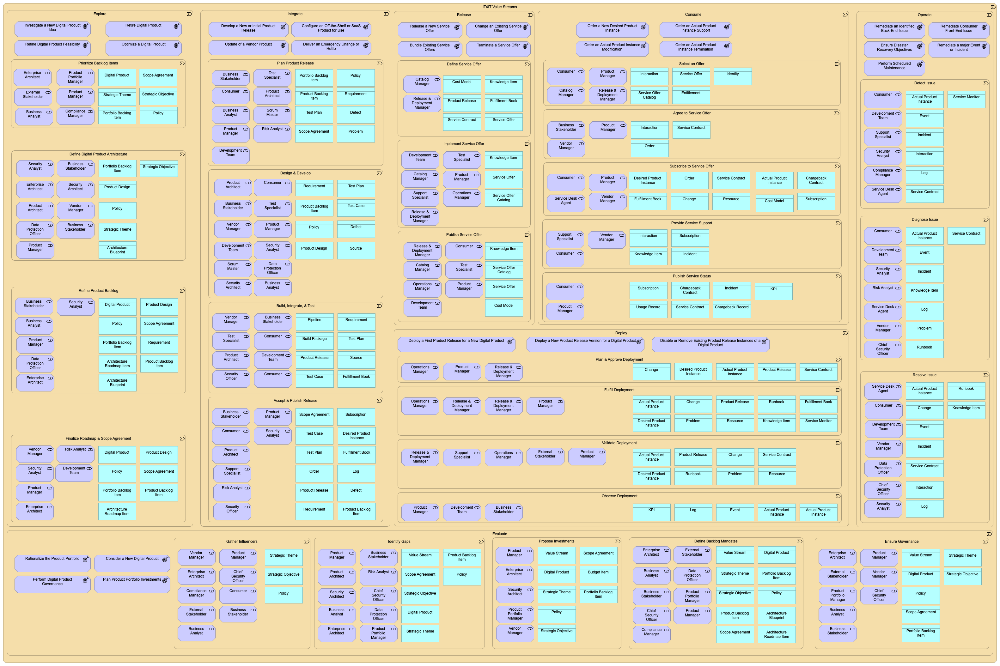
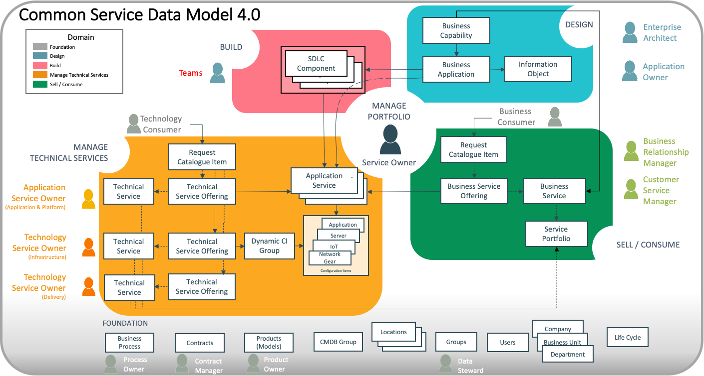

The Open Group - IT4IT Value Steam & Data Objects

ServiceNow - Common Service Data Model (CSDM)

IT4IT Known Data Modeling Challenges
What is an “Application”?
ServiceNow: Business applications are the logical representation of all software and infrastructure instances used to increase productivity and to provide functionality to perform business functions accurately.
TOGAF (The Open Group): deployed and operational IT system that supports business functions and services.
AWS: computer software designed to help users perform a particular task.
Wikipedia: computer program designed to help people perform an activity .
Martin Fowler: We can draw application boundaries in hundred arbitrarily different ways. But it’s our nature to group things together and organize groups of people around these groups. Essentially applications are social constructions:
- A body of code that’s seen by developers as a single unit,
- A group of functionality that business customers see as a single unit,
- An initiative that those with the money see as a single budget.
Wikipedia, Application Portfolio Management (APM): The definition of an application can be difficult to convey clearly. In an IT organization, there might be subtle differences in the definition among teams and even within one IT team. It helps to illustrate the definition by providing examples. The section below offers some examples of things that are applications, things that are not applications, and things that comprise two or more applications.
Inclusions:
- A web service endpoint that presents three web services: InvoiceCreate, InvoiceSearch, and InvoiceDetailGet
- A service-oriented business application (SOBA) that presents a user interface for creating invoices, and that turns around and calls the InvoiceCreate service. (note that the service itself is a different application).
- A mobile application that is published to an enterprise application store and thus deployed to employee-owned or operated portable devices enabling authenticated access to data and services.
- A legacy system composed of a rich client, a server-based middle tier, and a database, all of which are tightly coupled. (e.g. changes in one are very likely to trigger changes in another).
- A website publishing system that pulls data from a database and publishes it to an HTML format as a sub-site on a public URL.
- A database that presents data to a Microsoft Excel workbook that queries the information for layout and calculations. This is interesting in that the database itself is an application unless the database is already included in another application (like a legacy system).
- An Excel spreadsheet that contains a coherent set of reusable macros that deliver business value. The spreadsheet itself constitutes a deployment container for the application (like a TAR or CAB file).
- A set of ASP or PHP web pages that work in conjunction with one another to deliver the experience and logic of a web application. It is entirely possible that a sub-site would qualify as a separate application under this definition if the coupling is loose.
- A web service end point established for machine-to-machine communication (not for human interaction), but which can be rationally understood to represent one or more useful steps in a business process.
Exclusions:
- An HTML website.
- A database that contains data but is not part of any series of steps to deliver business value using that data.
- A web service that is structurally incapable of being part of a set of steps that provides value. For example, a web service that requires incoming data that breaks shared schema.
- A standalone batch script that compares the contents of two databases by making calls to each and then sends e-mail to a monitoring alias if data anomalies are noticed. In this case, the batch script is very likely to be tightly coupled with at least one of the two databases, and therefore should be included in the application boundary that contains the database that it is most tightly coupled with.
Composites:
- A composite SOA application composed of a set of reusable services and a user interface that leverages those services. There are at least two applications here (the user interface and one or more service components). Each service is not counted as an application.
- A legacy client-server app that writes to a database to store data and an Excel spreadsheet that uses macros to read data from the database to present a report. There are TWO apps in this example. The database clearly belongs to the legacy app because it was developed with it, delivered with it, and is tightly coupled to it. This is true even if the legacy system uses the same stored procedures as the Excel spreadsheet.